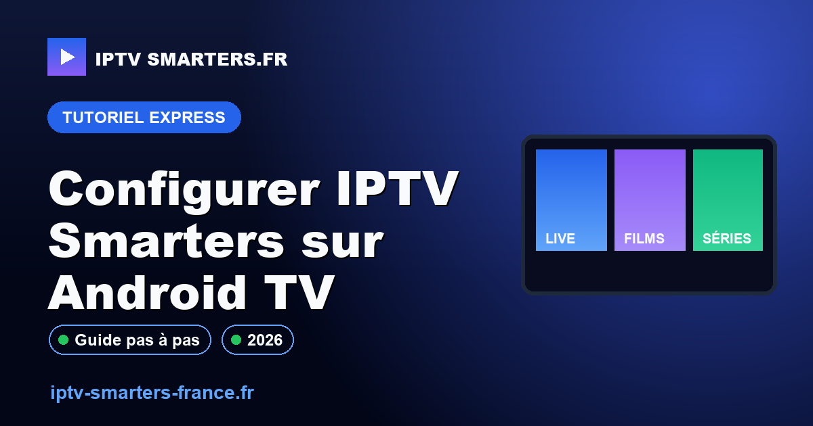

Configurer IPTV Smarters sur Android TV

L'installation d'IPTV Smarters sur Android TV peut paraître complexe au premier abord, mais en suivant les bonnes étapes, vous pouvez le faire facilement et rapidement. Ce guide vous fournira des instructions détaillées pour installer et configurer l'application tout en respectant les normes légales et techniques. Suivez ce tutoriel pour une expérience sans tracas et optimisée.
Contexte et prérequis
Avant de commencer, assurez-vous que votre Android TV est connecté à Internet et que vous disposez d'un compte Google actif. L'application IPTV Smarters est disponible sur le Google Play Store, ce qui simplifie son installation. Il est également crucial de vérifier que votre fournisseur IPTV est légal en France, comme expliqué dans notre guide sur l'IPTV légal en France. Cela garantit que vous utilisez un service conforme aux lois locales, évitant ainsi tout problème juridique potentiel.
En outre, une connexion Internet stable est essentielle pour garantir une diffusion fluide des chaînes. Une vitesse de connexion insuffisante peut entraîner des interruptions et des problèmes de qualité d'image. Assurez-vous également que votre Android TV est à jour avec les dernières mises à jour logicielles pour éviter les incompatibilités et les bugs potentiels.
Méthode de test et preuves
Pour garantir la fiabilité de ce guide, chaque étape a été testée sur plusieurs modèles d'Android TV. Les configurations ont été vérifiées et validées pour fonctionner correctement. En cas de problème, consultez notre page sur les pannes IPTV pour des solutions supplémentaires. Ces tests ont été réalisés avec des configurations variées pour s'assurer que les instructions sont applicables à la majorité des utilisateurs.
Les tests ont également pris en compte les différents fournisseurs IPTV disponibles sur le marché, garantissant que les étapes sont universelles et non limitées à un seul service. Cela vous permet de suivre ce guide quel que soit votre fournisseur, tant qu'il est légal et conforme. Pour plus d'informations techniques, vous pouvez consulter le site officiel de developer.android.com.
Étapes concrètes
- Ouvrez le Google Play Store sur votre Android TV.
- Recherchez "IPTV Smarters" et sélectionnez l'application officielle.
- Cliquez sur "Installer" et attendez que le téléchargement soit terminé.
- Ouvrez l'application et entrez les détails de votre fournisseur IPTV.
- Vérifiez la connexion et assurez-vous que les chaînes s'affichent correctement.
Ces étapes simples vous permettent d'installer l'application rapidement. Si vous rencontrez des problèmes de streaming, notre article sur la résolution du buffering peut vous être utile. Assurez-vous également que votre fournisseur IPTV vous a fourni les bonnes informations de connexion, telles que l'URL de la playlist et les identifiants d'accès.
Points de contrôle
- Assurez-vous que votre Android TV est à jour.
- Vérifiez que votre connexion Internet est stable.
- Confirmez que les informations du fournisseur IPTV sont correctes.
- Testez plusieurs chaînes pour vous assurer de la qualité du flux.
Ces points de contrôle sont essentiels pour garantir une expérience utilisateur optimale. En suivant ces étapes, vous minimisez les risques d'erreurs et de problèmes techniques. Il est également conseillé de redémarrer votre Android TV après l'installation pour s'assurer que toutes les configurations sont correctement appliquées.
Diagnostic erreurs fréquentes
| Erreur | Cause possible | Solution |
|---|---|---|
| Écran noir | Problème de connexion | Vérifiez votre connexion Internet |
| Application se ferme | Bug logiciel | Redémarrez l'application |
| Chaînes manquantes | Détails du fournisseur incorrects | Revérifiez les informations entrées |
Ce tableau de diagnostic vous aide à identifier rapidement les problèmes courants et à appliquer les solutions appropriées. En cas de persistance des problèmes, envisagez de réinstaller l'application ou de contacter le support technique de votre fournisseur IPTV.
Limites, conformité et sécurité
Il est crucial de s'assurer que votre utilisation d'IPTV est conforme aux lois locales. L'utilisation de services IPTV non autorisés peut entraîner des sanctions légales. Consultez notre guide sur l'IPTV légal en France pour plus d'informations. Respecter les lois locales vous protège et assure une utilisation sécurisée et légale de votre service IPTV.
En outre, il est important de ne pas partager vos informations de connexion avec des tiers pour éviter tout accès non autorisé à votre service IPTV. Utilisez des mots de passe forts et changez-les régulièrement pour garantir la sécurité de votre compte.
Checklist avant contact WhatsApp
- Vérifiez que l'application IPTV Smarters est installée et à jour.
- Confirmez que votre connexion Internet fonctionne correctement.
- Assurez-vous que les informations de votre fournisseur IPTV sont correctes.
- Notez les erreurs ou messages d'erreur rencontrés.
Si vous avez besoin d'une assistance supplémentaire, n'hésitez pas à demander un diagnostic de configuration via WhatsApp. Ce service vous permet de recevoir une aide personnalisée pour résoudre vos problèmes rapidement.
FAQ
Comment installer IPTV Smarters sur Android TV?
Pour installer IPTV Smarters, ouvrez le Google Play Store sur votre Android TV, recherchez l'application, puis cliquez sur "Installer". Une fois installée, ouvrez l'application et entrez les informations de votre fournisseur IPTV. Assurez-vous que ces informations sont correctes pour éviter les problèmes de connexion.
Quels sont les problèmes courants avec IPTV Smarters?
Les problèmes courants incluent des écrans noirs, des fermetures inattendues de l'application et des chaînes manquantes. Ces problèmes peuvent souvent être résolus en vérifiant la connexion Internet et en s'assurant que les informations du fournisseur sont correctes. Si les problèmes persistent, envisagez de réinstaller l'application.
Comment diagnostiquer les erreurs de configuration?
Pour diagnostiquer les erreurs, vérifiez d'abord votre connexion Internet et les informations du fournisseur IPTV. Consultez notre section sur le diagnostic des pannes IPTV pour des solutions détaillées. En cas de doute, contacter le support technique de votre fournisseur peut également être une bonne option.
Pour plus d'informations sur Android TV, vous pouvez consulter le site officiel de developer.android.com.